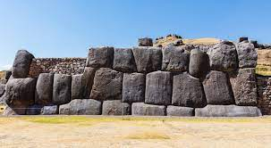

City of Cusco, including Qorikancha, Santa Domingo, and walls at Saqsa Waman. Central Highlands, Peru. Inka. c. 1440 CE; convent added 1550- 1650 CE. Andesite.
Santa Domingo
Form
In the shape of the puma, a royal animal
Modern plaza is in the place where the puma’s belly would be
Head, a fortress; heart, a central square
Function
Historic capital of the Inka Empire
Qorikancha: main temple, church, and convent of Santo domingo
Form
Ashlar masonry; carefully grooved and beveled edges of the stone fit together in a puzzle-like formation
Slight spacing among stones allows movement during earthquakes
Walls taper upward; examples of Inkan trapezoidal architecture
Temple displays inkan use of interlocking stonework of great precision
Original exterior walls of the temple were decorated in gold to symbolize sunshine
Spanish chroniclers insist that the walls and floors of the temple were covered in gold
Function
Qorikancha: golden enclosure; once was the most important temple in the Inkan world
Once was an observatory for priests to chart the skies
Context
The location is important; placed at the convergence of the four main highways and connected to the four districts of the empire; the temple cemented the symbolic importance of religion, uniting the divergent cultural practices that were observed in the vast territory controlled by the Inkas
Remains of the Inkan temple of the sun form the base of the Santo domingo convent built on top

Walls at Saqsa Waman
Form
Ashlar masonry
Ramparts contain stones weighing up to seventy tons, brought from a quarry two miles away
Context
Complex outside the city of Cusco, Peru, at the head of the puma-shaped plan of the city